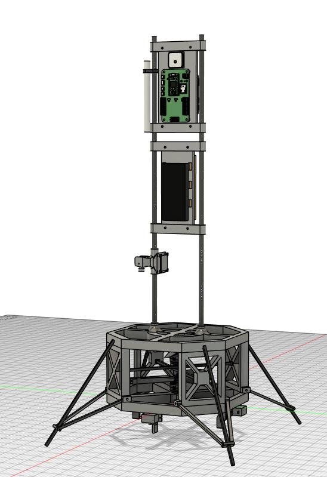
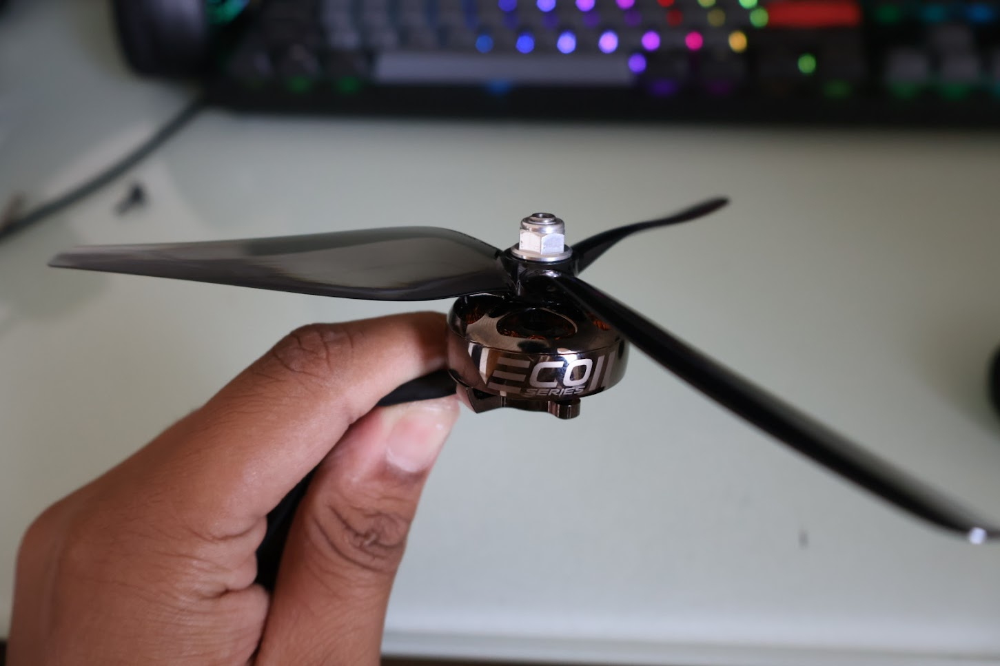
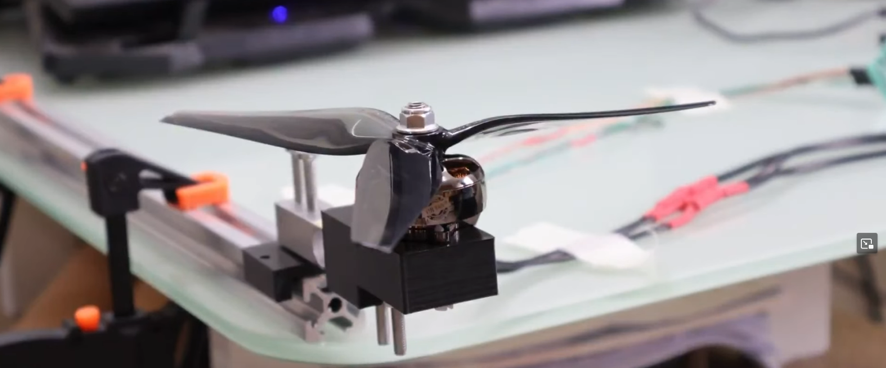
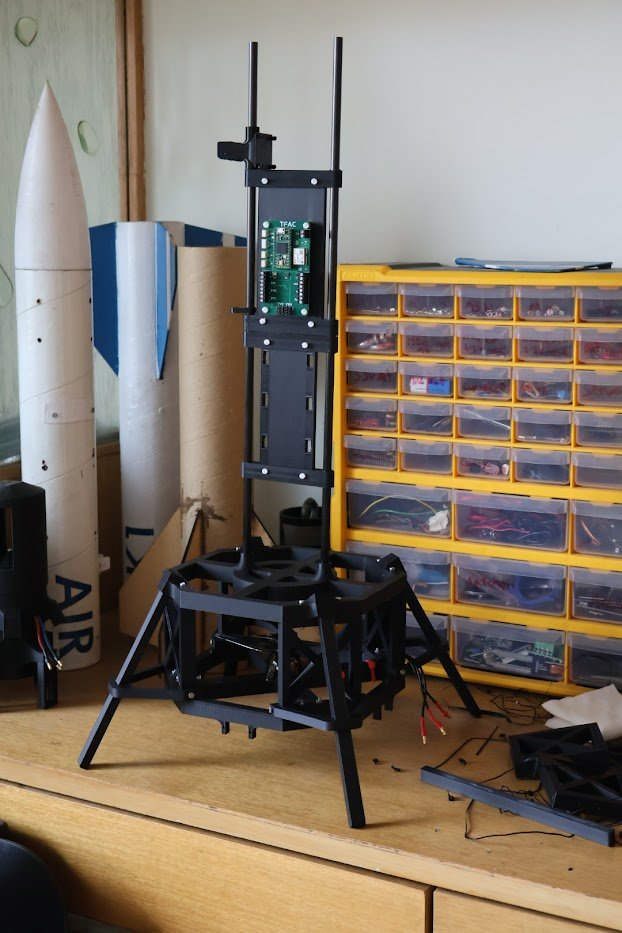

April - May 2025
Dev Log 24
Project Update - April 2025
April was the proper start of Lander v3. Got the CAD for the lander finished (fig 1) pretty early on this month. I'm keeping the upper section of the vehicle identical to the previous version so I don't have to redesign and reprint the parts I've already made. I based the motor section heavily based on Charles ∇P's Project Epsilon. Both motors are held in a hexagonal cage, with both motors inline to each other. The bottom motor is directly mounted on the bottom section of the hexagonal case, and the top motor is mounted to a box which is held above the bottom motor by rectangular CF tubes. The landing legs also use rectangular CF tubes, these tubes come pre-cut with a length of 200mm.

After this I got the EMAX ECO II 1300kv motors (fig 2), and tested it on a bare-bones test stand. I.E the load cell is directly mounted to a 2020 aluminum extrusion and the motor is mounted on a 3D printed adapter which is bolted to the other end of the load cell (fig 3).


I had a 4s 2200mAh LiPo (originally specced out for the EDF) with me for these tests, and I was hoping I could use it for this vehicle. After running the tests the max thrust I was getting was only around 0.9kg, so I'll have to upgrade to a 5s or 6s LiPo for the actual lander.
Project Update - May 2025
There were some changes to the design of the Lander. First I decide to scrap the idea of having the top motor mounted via CF tubes in the middle of the propulsion cage. Now I'll have the other hexagonal section at the top of the propulsion cage. This was done because the CF rods I had specced out went out of stock everywhere. Next I switched from using those same CF rods for the landing legs to 3D printing the landing legs and leg struts. I did this for the same reason as before. With that I've 3D printed all the components and put the lander together. The hardware is now finally finished (fig 4)!
